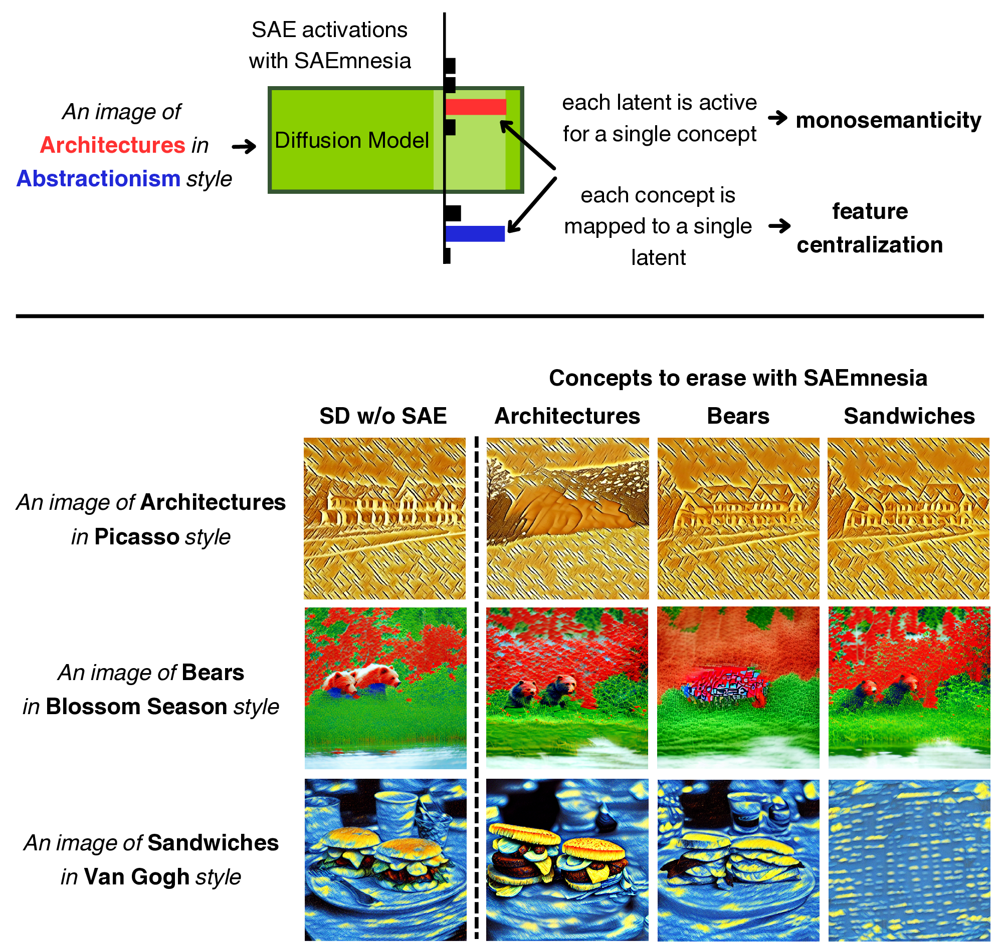
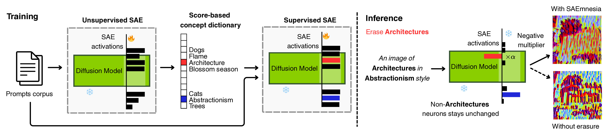

Abstract
- No diffusion model retraining — only the SAE weights are updated
- Concept-specific latent assignment via cross-entropy supervision
- Evaluated on the UnlearnCanvas benchmark (objects & styles)
- Robustness tested against adversarial re-learning attacks
Overview


Results
Evaluation of SAEmnesia against state-of-the-art methods on style and object unlearning on the UnlearnCanvas benchmark. Best results are in bold, second-best are underlined.
| Method | Effectiveness | Avg. ↑ | FID ↓ | Efficiency | ||||||
|---|---|---|---|---|---|---|---|---|---|---|
| Style Unlearning | Object Unlearning | Memory (GB) ↓ | Storage (GB) ↓ | |||||||
| UA ↑ | IRA ↑ | CRA ↑ | UA ↑ | IRA ↑ | CRA ↑ | |||||
| ESD | 98.58 | 80.97 | 93.96 | 92.15 | 55.78 | 44.23 | 77.61 | 65.55 | 17.8 | 4.3 |
| FMN | 88.48 | 56.77 | 46.60 | 45.64 | 90.63 | 73.46 | 66.93 | 131.37 | 17.9 | 4.2 |
| UCE | 98.40 | 60.22 | 47.71 | 94.31 | 39.35 | 34.67 | 62.45 | 182.01 | 5.1 | 1.7 |
| CA | 60.82 | 96.01 | 92.70 | 46.67 | 90.11 | 81.97 | 78.05 | 54.21 | 10.1 | 4.2 |
| SalUn | 86.26 | 90.39 | 95.08 | 86.91 | 96.35 | 99.59 | 92.43 | 61.05 | 30.8 | 4.0 |
| SEOT | 56.90 | 94.68 | 84.31 | 23.25 | 95.57 | 82.71 | 72.91 | 62.38 | 7.34 | 0.0 |
| SPM | 60.94 | 92.39 | 84.33 | 71.25 | 90.79 | 81.65 | 80.23 | 59.79 | 6.9 | 0.0 |
| EDiff | 92.42 | 73.91 | 98.93 | 86.67 | 94.03 | 48.48 | 82.41 | 81.42 | 27.8 | 4.0 |
| SHS | 95.84 | 80.42 | 43.27 | 80.73 | 81.15 | 67.99 | 74.90 | 119.34 | 31.2 | 4.0 |
| SAeUron | 95.80 | 99.10 | 99.40 | 87.16 | 85.57 | 74.14 | 90.10 | 62.69 | 2.8 | 0.2 |
| SAEmnesia (ours) | 96.60 | 98.67 | 99.30 | 94.65 | 91.39 | 88.48 | 94.85 | 56.15 | 2.8 | 0.2 |
Table 1 — UA: Unlearning Accuracy (higher = better erasure). IRA: In-Domain Retention Accuracy. CRA: Cross-Domain Retention Accuracy. FID measures image quality. Memory and Storage reflect inference overhead.
Interactive Demo
Compare the base diffusion model with SAEuron and SAEmnesia. Select a subject, artistic style, concept to suppress, timestep range, and multiplier strength to explore how each method handles concept unlearning. Optimal uses each method's own best-known negative multiplier for the selected concept; other values apply the same multiplier to both for a direct comparison.
Training Details
We trained a TopK SAE with k = 32 and an expansion factor of 16, optimized with Adam.
Acknowledgements
This work builds upon SAeUron by Cywinski et al. We thank the authors for releasing their code.
Citation
If you find SAEmnesia useful in your research, please cite:
@inproceedings{saemnesia2026,
title = {SAEmnesia: Supervised Sparse Autoencoder Finetuning
for Concept Unlearning in Diffusion Models},
author = {Author One and Author Two and Author Three},
booktitle = {Proceedings of the 43rd International Conference on
Machine Learning (ICML)},
year = {2026},
}